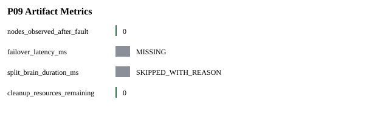

Status: PASS
Source phase: M1-S01
| 字段 | 值 |
|---|---|
| run_id | m1-s01-local |
| created_at | 2026-07-08T13:44:20Z |
| git_sha | 1bbbca941a8636a9e4685f4c2973ae4d15ddfd4d |
| valkey_version | MISSING: Valkey endpoints were not probed while creating run metadata. |
| artifact_root | runs/m1-s01-local/artifacts |
| Name | Status |
|---|---|
| source_phase | PASS |
| real_valkey_evidence | BLOCKED_WITH_REASON |
| failover | SKIPPED_WITH_REASON |
| cleanup | PASS |
| 指标 | 状态 | 原因 |
|---|---|---|
| real_valkey_smoke | SKIPPED_WITH_REASON | The local sandbox denied port preflight bind before a real Valkey smoke run could start. |
| split_brain_duration_ms | SKIPPED_WITH_REASON | No failover scenario is executed in M1-S01. |
